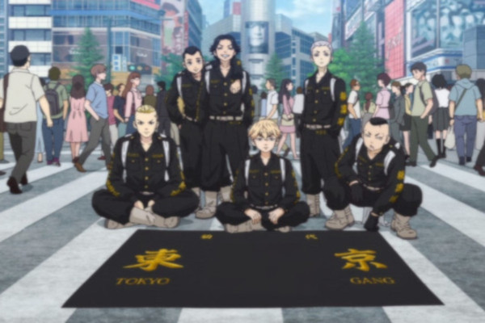

Como surgiu a Toman
Em meados de 2003, havia uma gangue no distrito de Shibuya, no Japão, chamada "Black Dragons", Uma gangue de motoqueiros que comandava a cidade. Então, Keisuke Baji, um dos amigos de Mikey deu a idéia de efetuar uma criação de um time que rivalizava com a Black Dragons, por fim, a gangue Tokyo Manji ou mais conhecida como Toman foi criada, com base neste lema: "Se um de nós se machucar, nós o protegemos. Quero uma gangue que seja todos por um, um por todos". A identidade inicial do time era juntar alunos de várias escolas de Tóquio e formar um time forte de motoqueiros, sua ética consistia em defender seus amigos e nunca se rebaixar a fazer atos covardes e errados. Costumavam pregar peças um no outro, agindo de boa fé, sendo assim, a gangue foi formada pelos membros: Mickey como capitão, Draken vice-capitão, mitsuya o mediador, pachin o porta-bandeira e Kazutora e baji seriam a unidade de ataque. No ano de inauguração, Mitsuya fez os uniformes oficiais e a famigerada foto inaugural foi tirada e assim deu início às suas histórias.
Alguns meses depois, perto do aniversário do Mikey, Kazutora decide dar um presente surpresa ao amigo, convencendo Baji a ajudá-lo, os dois pretendiam assaltar uma loja de motos para roubar a motocicleta do modelo mais novo e presentear Mickey, no entanto, são pegos pelo dono da loja, que inesperadamente era Shinichiro, o irmão mais velho de Mikey. Kazutora sem ver quem era e com medo de ir para o reformatório, o mata em um ato de puro medo. No final das contas, Baji convence o amigo a se entregar, e ambos são presos e levados ao reformatório. Apesar disso, Baji não fica lá, assumindo toda culpa, seu companheiro Kazutora permanece preso e cumpre uma pena de 2 anos, acontecimento este que marcou a primeira separação da Tokyo Manji.
